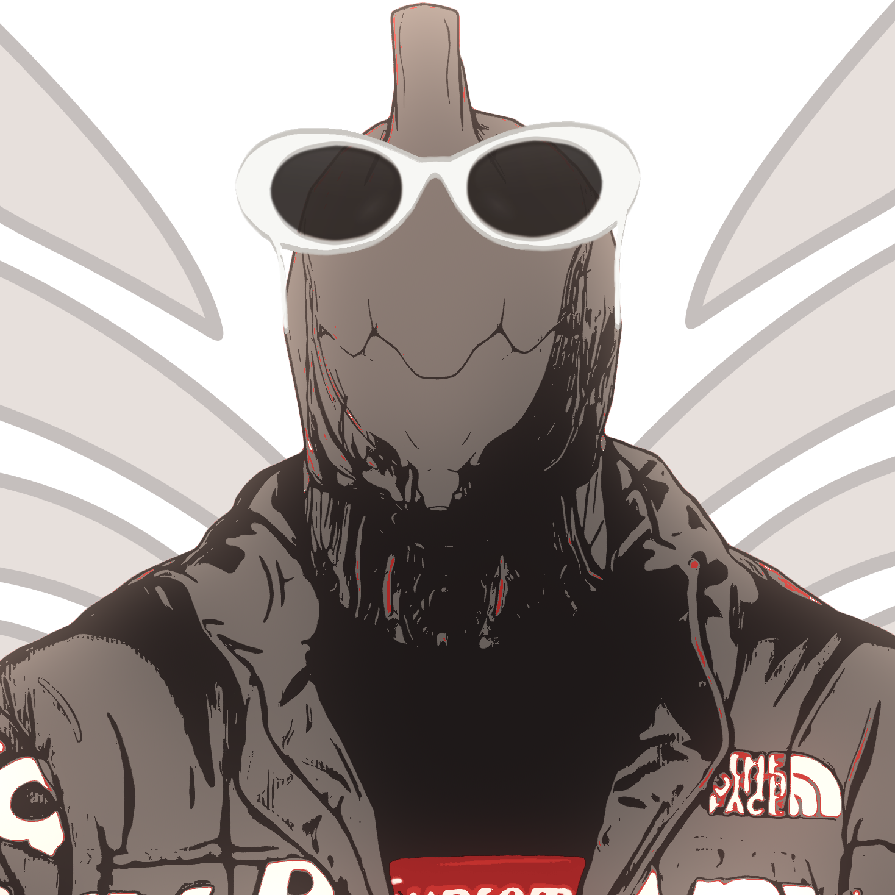

GWANOXaka gwan
I'm the Conclave guy. Most of these projects grow from my love for Warframe's niche PvP mode. All of them have one common goal: Reigniting Conclave.


I'm the Conclave guy. Most of these projects grow from my love for Warframe's niche PvP mode. All of them have one common goal: Reigniting Conclave.

Gwanox.com is a compact index for Warframe Conclave and Warframe PvP resources, including a Warframe PvP Discord page, a Conclave guide, a Warframe PvP landing page, PvP match broadcasts, YouTube archives, Captura work, Conclave mod inventory and a Warframe referral.